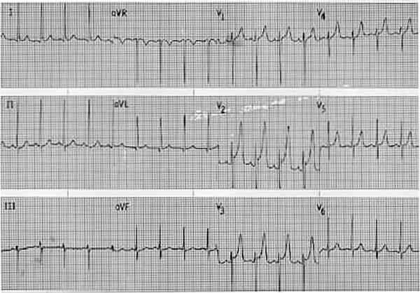
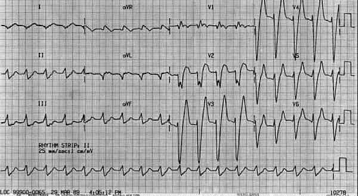

Bienvenue Sur Medical Education
Hyperkaliémie
Spécialité : metabolisme /
Points importants
- Définition : kaliémie > 5,5 mmol/L
- Toujours éliminer une fausse hyperkaliémie (garrot, hémolyse)
- Trouvée chez 8% des patients hospitalisés
- L'hyperkaliémie a un pronostic essentiellement cardiaque, ce d'autant que l'installation est brutale (risque d'arrêt cardiaque pour une kalémie > 6,5 mmol/ L)
- Le diagnostic clinique est peu évident, d'où l'importance d'effectuer un ECG en urgence au moindre doute
- La démarche diagnostique comprend l'évaluation de la fonction rénale, de l'état acido-basique ainsi que la recherche de facteurs déclenchants
-
Le traitement à instaurer est urgent et est conditionné par :
- le mécanisme d'installation de l'hyperkaliémie
- la cinétique d'apparition
- son taux sérique
-
Mortalité jusqu'à 67% si traitement d'une hyperkaliémie sévère non débuté précocement.
Présentation clinique / CIMU
SIGNES FONCTIONNELS
- Peut être complètement asymptomatique
Généraux
- Asthénie
Spécifiques
-
Troubles neuromusculaires (rares) :
- troubles de la sensibilité : paresthésies distales des membres, de la langue, des lèvres
- troubles moteurs avec diminution de la force musculaire, paralysie ascendante
-
Troubles cardiaques :
- palpitations
-
Autres signes étiologiques :
- hémorragie digestive
- polypnée (en cas d'acidose métabolique)
CONTEXTE
Terrain
- Personne âgée, le diabétique, le dialysé chronique
Traitement usuel
- Hémodialyse ou dialyse péritonéale
- Suppléments en potassium
- Diurétiques épargneurs de potassium
- AINS
- Bêtabloquants
- Digitaliques
- Succinylcholine
- Chimiothérapie
Antécédents
- Familiaux : néphropathie
-
Personnels :
- maladie athéromateuse
- infections urinaires hautes récidivantes
- uropathies
- goutte
- néoplasie en cours de traitement
- insuffisance rénale chronique (surtout dialysé)
- insuffisance surrénalienne chronique
- drépanocytose
Facteurs de risque
- Diabète, HTA
Circonstances
- Exposition toxique professionnelle = plomb, cadmium
- Patient insuffisant rénal chronique (connaître la fréquence des séances d'épuration extra-rénale et la date de sa dernière séance)
- Insuffisance rénale aiguë
- Traumatisme (crush syndrome, rhabdomyolyse)
- Grand brûlé
- Chimiothérapie
- Acidose métabolique, états cataboliques
- Ingestion d'aliments à forte teneur en potassium (ex : bananes, oranges, tomates,...)
EXAMEN CLINIQUE
Inspection
- Fistule artério-veineuse - portacat
- Compressions cutanées - érythèmes cutanés
- Etat d'hydratation cutané (déshydratation, rétention)
- Signes cliniques d'insuffisant surrénalien chronique (origine centrale = pâleur, dépilation, atrophie testiculaire ou périphérique = mélanodermie, vitiligo)
- Signes cliniques en rapport avec pathologie néoplasique connue
Cardio-vasculaire
- Bradycardie, arythmie (pauses, extrasystoles)
Neurologique
- ROT diminués
- Baisse de la force musculaire (jusqu'à la paralysie)
EXAMENS PARACLINIQUES SIMPLES
ECG
- Grande variabilité individuelle
- Anomalies diffuses, quasi-constantes au-delà de 6 mmol/ L et accentuées en cas d'acidose associée
-
Différents stades :
-
stade 1 (ECG stade 1 hyperkaliémie):
- ondes T amples, à base étroite, positives, symétriques et pointues
- segment QT normal voire raccourci
-
segment ST avec aspect en « S italique » puis se confond avec le début de l'onde T
-  _81 ECG : stade 1 hyperkaliémie
-
stade 2 1 (ECG stade 2 hyperkaliémie) :
- allongement de l'espace PR
- diminution de l'amplitude de l'onde P
-
on peut observer un bloc BAV3 ou des paralysies sinusales
-  _82 ECG : stade 2 hyperkaliémie
-
stade 3 :
- effacement complet de l'onde P
- élargissement des complexes QRS > 0,12 sec. avec une onde S large et profonde dite « en lame de sabre »
-
rythme cardiaque variable :
- tantôt rapide avec aspect de TV
- tantôt lent, d'origine jonctionnelle si défaillance sinusale
-
stade 4 :
- ventriculogrammes élargis, diphasiques et précédent souvent l'arrêt cardiaque, le plus souvent par asystolie
-
stade 1 (ECG stade 1 hyperkaliémie):
Bandelette urinaire
- Hématurie
- ± leucocyturie (en cas de néphrite interstitielle)
-
pH urinaire (pH < 6,5 = acidose tubulaire)
Signes paracliniques
BIOLOGIQUE
- Ionogramme sanguin (protidémie) - urée - créatinine
-
Il faut éliminer une fausse hyperkaliémie :
- garrot
- hémolyse
- effort musculaire (contraction des muscles de l'avant-bras lors du prélèvement)
- syndrome myéloprolifératif (hyperleucocytose, thrombocytémie, mononucléose infectieuse)
- en cas de doute, contrôler en faisant un nouveau prélèvement sans garrot sur tube citraté (devant absence de signes électriques et de cause évidente d'hyperkaliémie)
- Ionogramme urinaire (kaliurèse)
- Glycémie (si patient diabétique)
- Intérêt CO2 total ± gaz du sang artériel (si suspicion acidose)
- En fonction des circonstances, enzymes musculaires (CPK)
- En cas de découverte d'insuffisance rénale, prévoir NFS (anémie normochrome normocytaire) et calcémie (hypocalcémie), éléments aspécifiques d'une insuffisance rénale chronique
-
En fonction du contexte, dosage des toxiques sanguins
Diagnostic étiologique
EXCES D'APPORTS EXOGENE
- Apports iatrogéniques (per os - voie IV)
- Sels de régime
- Pénicillinate de potassium
- Exsanguino-transfusion
EXCES D'APPORTS ENDOGENE
-
Rhabdomyolyse traumatique ou toxique :
- hématomes
- Brûlures
- Crush syndrome
- Hémolyses
- Chimiothérapie anticancéreuse
- Hémorragie digestive
REDISTRIBUTION TRANSCELLULAIRE
- Acidose métabolique
- Sepsis
- Exercice musculaire
- Diabète insulinoprive
- Paralysie hyperkaliémiante familiale
-
Médicaments et intoxications :
- bêtabloquants
- succinylcholine
- digitaline, digoxine
- monohydrochloride d'arginine
- fluorures
- cyanures
DIMINUTION DE LA CAPACITE D'EXCRETION RENALE
- Insuffisance rénale aiguë
- Insuffisance rénale chronique
-
Facteurs favorisants :
- néphrite interstitielle - néphropathie diabétique
- alimentation riche en potassium
- utilisation de sels de régime
- diurétiques épargneurs de potassium
DIMINUTION DE LA CAPACITE DE L'EXCRETION RENALE, PAR ATTEINTE DU SYSTEME RENINE -ANGIOTENSINE
- Syndrome hypoaldostéronisme avec hyporéninémie = iatrogénique (bêtabloquants, IEC, héparine, AINS)
- Insuffisance surrénalienne aiguë
-
Anomalie de la sécrétion tubulaire rénale :
- uropathie obstructive
- acidose tubulaire rénale distale
- pseudo-hypoaldostéronisme type 1 / 2
- drépanocytose
- transplantation rénale
- lupus érythémateux disséminé (LED)
-
Inhibition de la sécrétion tubulaire :
- lithium
- diurétiques épargneurs de potassium
- ciclosporine
-
triméthoprime
Traitement
OBJECTIFS
- Corriger les effets transmembranaires
- Favoriser le transfert du potassium entre le secteur extracellulaire et intracellulaire
- Soustraire le potassium de l'organisme
- Débuter le traitement étiologique
TRAITEMENT PREHOSPITALIER / INTRAHOSPITALIER
Stabilisation initiale
- Pose d'une voie veineuse avec du NaCl 0,9% ou G5% (selon le terrain)
- Scope
-
Si HoTA ou QRS larges :
- bicarbonate de sodium, calcium et insuline + G30%
- si suspicion de surdosage ou d'intoxication digitalique, éviter le Calcium mais administrer du sulfate de magnésium (2g sur 5 min)
ELEVATION MODEREE (KALIEMIE < 6 MMOL/L)
-
Traitement = soustraire le potassium de l'organisme :
-
résine échangeuse de potassium, sulfonate de polystyrène de sodium Kayexalate® 15 à 30g per os ou dilués dans 50 à 100 mL de G10% en lavement. 1 cuillère mesure équivalant à 15g
- délai d'action = 1 à 3 heures
- durée d'action = 6 heures
- renouvelable toutes les 6 heures
-
diurétiques : furosémide 1 mg/kg en IV lent
- délai d'action = début diurèse
- urée d'action = persistance diurèse
- dialyse (cf infra)
-
résine échangeuse de potassium, sulfonate de polystyrène de sodium Kayexalate® 15 à 30g per os ou dilués dans 50 à 100 mL de G10% en lavement. 1 cuillère mesure équivalant à 15g
ELEVATION MODEREE (KALIEMIE ENTRE 6 ET 6,5 MMOL/L) SANS SIGNES ELECTRIQUES
Réanimateur médical informé
-
Traitement = favoriser le transfert trans-membranaire :
-
insuline - glucose : 10 UI d'insuline rapide dans 500 mL de G10% ou 30 UI dans 500 mL G30% en IVL en 15 à 30 min
- délai d'action = 15 à 30 min
- effet maximum = 30 à 60 min
- durée d'action = 4 à 6 heures
-
insuline - glucose : 10 UI d'insuline rapide dans 500 mL de G10% ou 30 UI dans 500 mL G30% en IVL en 15 à 30 min
ELEVATION SEVERE (KALIEMIE > 6,5 MMOL/ L) SANS SIGNES ELECTRIQUES
Réanimateur médical informé
-
Traitement = favoriser le transfert trans-membranaire :
-
salbutamol (Ventoline®) ou terbutaline (Bricanyl®) 5 mg en nébulisation en 15 min
- délai d'action = 30 min
- durée d'action = 2 à 4 h
- contre-indications = tachycardie, coronaropathie, prise de bêtabloquants
- bicarbonate de sodium 1,4% : 1 mEq/kg IV en 5 min
-
si acidose métabolique (pH < 7,25) :
- 50 mL bicarbonate de sodium molaire 8,4% ou 100 mL bicarbonate de sodium semi-molaire 4,2% en 30 min
-
salbutamol (Ventoline®) ou terbutaline (Bricanyl®) 5 mg en nébulisation en 15 min
- Les autres traitements sont également indiqués (insuline - Glucose / Kayexalate®)
ELEVATION SEVERE (KALIEMIE 6,5 MMOL /L) AVEC SIGNES ELECTRIQUES
Réanimateur médical informé
-
Traitement = URGENCE = protection cardiaque :
-
gluconate de calcium 10 mL à 10% en IV sur 2 à 5 min, renouvelable 5 min après
- délai d'action = 1 à 3 min
- durée d'action = 30 à 60 min
- contre-indication en cas de traitement par digitaliques
- utiliser secondairement les autres traitements pour correction de la kaliémie
- si BAV haut degré, isoprénaline chlorhydrate Isuprel® (ampoule 0,2 mg) 0,2 - 0,4 mcg/kg/min
- épuration extrarénale (hémodialyse) du potassium si insuffisance rénale aiguë oligo-anurique
- cas de traitement par digitalique --> bicarbonates molaire ou semi-molaire 100 mL en 5 à 15 min, renouvelable une fois
-
gluconate de calcium 10 mL à 10% en IV sur 2 à 5 min, renouvelable 5 min après
EN PARALLELE, INSTAURER UN TRAITEMENT ETIOLOGIQUE
- Arrêt perfusion potassium
- Hydratation en cas d'insuffisance rénale fonctionnelle
-
Hémisuccinate d'hydrocortisone en cas de tableau d'insuffisance surrénalienne aiguë
Surveillance
ECG - scope continu
Diurèse / h
Paramètres vitaux (PA - FC - FR - SpO2 ) / h
Biologique
- Contrôle ionogramme sanguin (kaliémie) / h
- Kaliurèse des 24 heures
- Créatinine et clairance de la créatinine
-
Glycémie capillaire / h
Devenir / orientation
KALIEMIE < 6,5 MMOL/ L, SANS SIGNES ELECTRIQUES
- Orientation dépend de la réponse au traitement et du motif de recours
- Hospitalisation préconisée
ELEVATION SEVERE (KALIEMIE 6,5 MMOL/L) AVEC OU SANS SIGNES ELECTRIQUES
- Orientation en service de soins continus pour poursuite du traitement
Mécanisme / description
APPORTS ENDOGENES DE POTASSIUM
- Le contenu potassium de l'organisme est de 50 mmol/ Kg de poids
- Les apports alimentaires en potassium sont de 60 à 100 mmol/24h. Le besoin minimal est de 25 mmol/ j
- Tous les aliments sauf l'eau et les matières grasses contiennent du potassium en des quantités variables. Certains aliments sont naturellement riches en potassium (fruits séchés, olives, haricots, légumes secs, orange, pamplemousse, persil, avocat, artichaut, champignons, choux, oseille, banane, chocolat)
REPARTITION DU POTASSIUM DANS L'ORGANISME
- 98% du K+ de l'organisme est localisé dans le secteur intra-cellulaire
- La majeure partie du potassium intracellulaire est échangeable
- Le compartiment musculaire et les cellules hépatiques sont les principales réserves du stock potassique intra-cellulaire
PHYSIOPATHOLOGIE
- Le potassium est le principal cation intracellulaire (150 mmol/L)
- Le potassium extracellulaire (kaliémie) varie de 3,5 à 4,5 mmol/L
- Le potassium est un ion essentiel au fonctionnement des cellules contractiles et nerveuses. Le gradient trans-cellulaire de potassium (Ki/Ke) est le principal déterminant du potentiel de repos membranaire
- Habituellement, l'équilibre potassique est maintenu grâce à la régulation de l'excrétion rénale. La filtration glomérulaire est de 170 L / j et la concentration en potassium de ce filtrat est identique à celle du plasma, soit environ 4 mmol/ L. La quantité de potassium filtré est d'environ 720 mmol / jour, soit 10 fois les apports quotidiens. Le siège de la sécrétion se situe au niveau du tubule distal et du canal collecteur
- 65% du potassium filtré est réabsorbé dans le tube contourné proximal, environ 30% dans l'anse de Henlé et 1 à 2% du potassium filtré est présent dans le tube contourné distal. L'excrétion urinaire du potassium est donc en grande partie liée à sa sécrétion tubulaire dans le néphron distal
APPORTS EXCESSIFS
- L'augmentation des apports en K+ entraîne une augmentation de l'excrétion urinaire de celui-ci dans les quatre premières heures. La relation entre la kaliémie et l'excrétion rénale de K+ montre que, pour une kaliémie supérieure à 4 mmol / L, l'excrétion rénale de K+ devient linéraire
PERTURBATIONS DU SYSTEME RENINE - ANGIOTENSINE
- La maladie d'Addison est caractérisée par un déficit de la sécrétion de cortisol et d'aldostérone avec fuite sodée urinaire et déshydratation extracellulaire. L'hyperkaliémie est due à la diminution de la kaliurèse, qui peut-être suffisante lorsque le déficit hormonal n'est pas complet et lorsque l'apport oral de sodium est suffisant
- Les hypoaldostéronismes avec hyporéninémie sont acquis ou induits par certains médicaments. Dans le premier cas, l'atteinte se situerait au niveau de l'appareil juxta-glomérulaire qui est souvent associée à une néphropathie sous-jacente. Les causes rénales de ce syndrome sont les néphropathies tubulo-interstitielles, l'atteinte de l'appareil glomérulaire, les syndromes d'obstacle urinaire. La néphropathie diabétique est la plus fréquemment retrouvée. Certains médicaments induisent des hypoaldostéronismes par inhibition de l'activité de la rénine (-bloquants), par diminution de la conversion de l'angiotensine I en angiotensine II (IEC) où le risque d'hyperkaliémie est lié à la fonction rénale préexistante, à la survenue d'une déshydratation et à l'apport sodé quotidien
- L'inhibition de la synthèse des prostaglandines, au sein du parenchyme rénal par certains anti-inflammatoires, diminue l'activité de la rénine et de l'aldostérone. La survenue d'hyperkaliémie est dépendante de facteurs comme le diabète, une insuffisance rénale et la prise concomitante de médicaments favorisant l'élévation de la kaliémie. L'héparine peut interférer avec la synthèse surrénalienne de l'aldostérone mais elle est rarement responsable d'une hyperkaliémie
PERTURBATIONS DE LA SECRETION TUBULAIRE DU POTASSIUM
- Les pseudo-hypoaldostéronismes de type I ont une aldostéronémie plasmatique élevée avec une baisse de la kaliurèse et une hyperkaliémie modérée. Ce tableau clinique s'observe chez l'enfant avant un an, traduisant une résistance à l'action cellulaire de l'aldostérone, et chez l'adulte, ce syndrome est associé aux pathologies tubulo-interstitielles
- Les pseudo-hypoaldostéronismes de type II ou shunt au chlore sont à l'origine d'une hyperkaliémie et d'une rétention hydrosodée avec HTA. L'aldostéronémie plasmatique est normale et le mécanisme responsable de la baisse de la kaliurèse serait une augmentation de la réabsorption du chlore avec diminution du gradient électrique transépithélial
- Les acidoses tubulaires rénales distales avec hyperkaliémies ont une incidence croissante. Elles sont associées à une acidose métabolique hyperchlorémique et une incapacité rénale à excréter le K+
TROUBLES HYDRO-ELECTROLYTIQUES DE L'INSUFFISANT RENAL CHRONIQUE
- En l'absence d'une charge en K+ endogène ou exogène, l'hyperkaliémie est assez rare chez des patients ayant une filtration glomérulaire supérieure à 10 ml/min. La balance potassique est maintenue par l'intermédiaire d'une sécrétion tubulaire augmentée de K+ médiée en partie par l'aldostérone et l'augmentation des pertes fécales de K+. Cependant, l'hyperkaliémie peut survenir par l'altération des mécanismes d'adaptation, d'origine médicamenteuse (anti-aldostérone, diurétiques épargneurs du potassium, IEC ou ARA2)
- Il existe une rétention obligatoire de protons et de K+ entre 2 séances de dialyse. L'hyperkaliémie peut être d'origine alimentaire, mais elle surtout favorisée par l'acidose métabolique
-
Même lorsque la fonction rénale est peu altérée, l'hyperkaliémie peut survenir plus précocement au cours de certaines néphropathies altérant la sécrétion tubulaire du K+, en particulier les néphropathies diabétique et interstitielle (uropathies obstructives, drépanocytose) au cours desquelles peuvent s'observer un hypoaldostéronisme hyporéninémique ou une résistance tubulaire à l'action de l'aldostérone
Bibliographie
- Consensus d'actualisation SFAR, 1999, P.Garcia, M.Belhoula, D.Grimaud European Resuscitation Council Guidelines for Resuscitation 2005 Brown RS, Kidney Int 1986 30 116 - 127
- A.Ellrodt, Urgences médicales, Edition ESTEM
- Lissac J, Amiel C, Grunfeld JP, Interprétation des déséquilibres hydro-électrolytiques et acidobasiques, JB Baillères, Paris 1988
- S. Silbernagl, A.Despopoulos, Atlas de poche de physiologie, Médecine - Science - Flammarion
-
Dr T. Hannedouche - Traitement de suppléance de l'insuffisance rénale terminale - dialyse www.nephrohus.org
-
-
-
-
-
-
-
-
-
- Kraft MD, Btaiche IF, Sacks GS, Kudsk KA treatment of electrolyte disorders in adult patient in the intensive care unit Am J Health Sys Pharm 2005 62 (16) 1663 - 82
-
-
-
Auteur(s) : Albéric GAYET